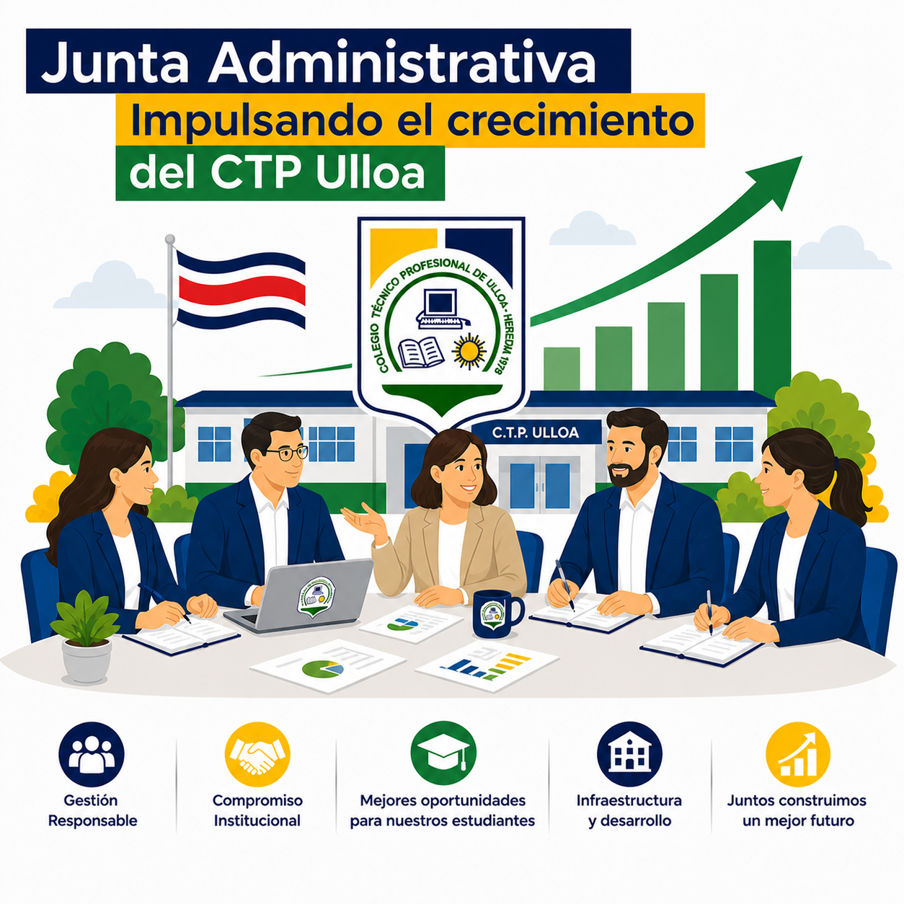
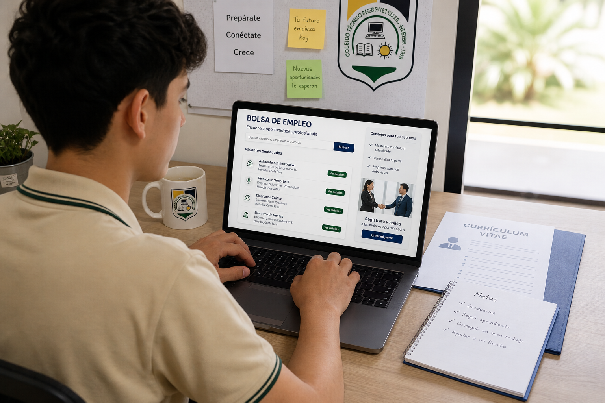

LicitacionCarteles de licitacion publicados
Consulte los procesos activos, requisitos generales y documentos disponibles para proveedores interesados.
Gestion institucional
Espacio oficial para compartir informacion administrativa, comunicados y carteles de licitaciones del CTP de Ulloa.
Noticias y avisos

LicitacionConsulte los procesos activos, requisitos generales y documentos disponibles para proveedores interesados.

Sin comentarios
Sin comentarios
Sin comentarios
Sin comentarios
Sin comentarios
Sin comentarios